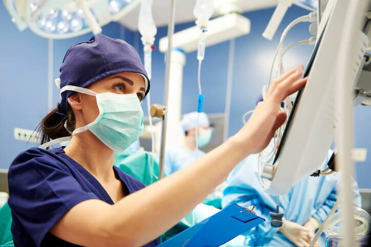

<div class="justify-content-md-center align-items-center animated fadeIn">
    <div class="neo shadow mb-2 bg-white">
        <div class="card-body">
            <h1 class="card-title text-center mr-2 text-aqua-dark">Servicios</h1>
            <div class="container col-md-8 mb-3">
                <p>
                    Los servicios de salud, se clasifican en baja, mediana y alta complejidad. Las clínicas y hospitales
                    de alta complejidad se relacionan con el tratamiento y manejo de enfermedades que requieren una alta
                    especialización, tecnología médica avanzada, personal médico y de enfermería de gran experiencia,
                    así como procesos de calidad con alto nivel de desarrollo.
                </p>
                <p>
                    Nuestros servicios cuentan con todas esas características, definidas bajo las normas legales y por
                    eso somos clasificados como una entidad de alta complejidad médica. Es importante aclarar que
                    tenemos la capacidad de atender los tres niveles, desde una consulta externa (que es baja
                    complejidad médica) hasta cirugías cardiovasculares y neurocirugía que son de alta complejidad.
                </p>
                <p>
                    Nuestra Clínica tiene un amplio listado de servicios médicos, de baja, mediana y alta complejidad,
                    que permiten que la atención de nuestros pacientes pueda darse en gran medida dentro de nuestras
                    instalaciones y no trasladar al paciente a otras entidades.
                </p>
                <p>
                    Lo más importante para nosotros, es que esa integralidad de servicios se acompañe de una alta
                    calidad científica y sobre todo humanizada; esto se convierte en la principal orientación gerencial,
                    para cumplir nuestra promesa de valor: “Amor que acompaña y servicio que alivia”.
                </p>
                <h5 class="text-aqua-dark">URGENCIAS 24 HORAS</h5>
                <p class="mb-1">
                    Nuestro servicio de urgencias cuenta con todas las capacidades para la atención de adultos y niños.
                    Contamos con la tecnología médica para la atención de eventos urgentes, apoyados por un amplio grupo
                    de especialidades, que soportan nuestro personal de médicos generales. A su vez, todos los otros
                    servicios hospitalarios apoyan la atención inmediata de urgencias, como por ejemplo cirugía.
                </p>
                <p>
                    El servicio de hospitalización en la sede tesoro, cuenta solo con habitaciones individuales.
                    Nuestras habitaciones tienen altas especificaciones internacionales para la atención de los
                    pacientes, en un ambiente de seguridad clínica que permite mantener controlados los riesgos en la
                    atención en salud.
                </p>
            </div>
            <br>
            <div class="container col-md-8 mb-3">
                <h5 class="text-aqua-dark">UNIDADES DE CUIDADO INTENSIVO NEONATALES</h5>
                <p class="mb-1">
                    Tradicionalmente la Clínica El Rosario es altamente reconocida por su servicio de maternidad. Para
                    aquellos casos en los que los recién nacidos tienen dificultades, la unidad neonatal cuenta con toda
                    la tecnología y el personal idóneo, para atender las enfermedades complejas que sufren los recién
                    nacidos.
                </p>
            </div>
            <div class="container col-md-8 mb-3">
                <h5 class="text-aqua-dark">UNIDADES DE CUIDADO INTENSIVO ADULTOS</h5>
                <p class="mb-1">
                    Estas unidades se especializan en todas las patologías complejas de los adultos. La tecnología que
                    las rodea, al igual que las otras unidades de cuidado intensivo, son avanzadas y se cuenta con una
                    planta de personal altamente especializada. El complemento de cirugía, ayudas diagnosticas
                    especializadas y de servicios cardiovasculares, hacen que la atención sea segura e integral.
                </p>
            </div>
            <div class="container col-md-8 mb-3">
                <h5 class="text-aqua-dark">CONSULTA EXTERNA DE MÉDICOS ESPECIALISTAS</h5>
                <p class="mb-1">
                    La torre médica de la Clínica El Rosario cuenta con una amplia variedad de especialidades médicas,
                    que complementan toda la atención hospitalaria brindada en nuestro portafolio de servicios.
                    Actualmente contamos con médicos de múltiples especialidades: cirugía general, cirugía de tórax,
                    ginecología, obstetricia, pediatría, neurocirugía, neurología, ortopedia, medicina interna,
                    neumología pediátrica, psiquiatría, dermatología, urología, anestesiología, cardiología, cirugía
                    plástica, otorrinolaringología, entre otras. Consulta Institucional en: Dolor y cuidado paliativo,
                    Cirugía de Tórax, Neumología, Ginecología Oncológica, Ortopedia, Urología.
                </p>
            </div>
            <div class="text-center container col-12 col-md-8 mb-3">
                
            </div>
        </div>
    </div>
</div>